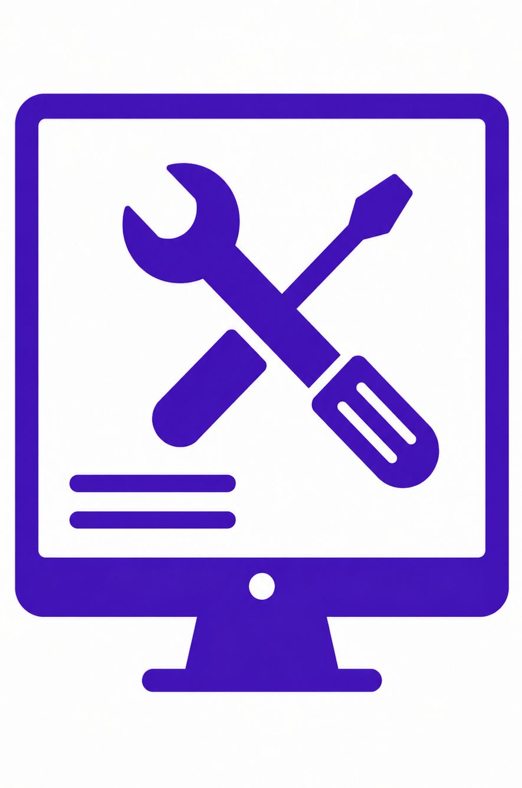
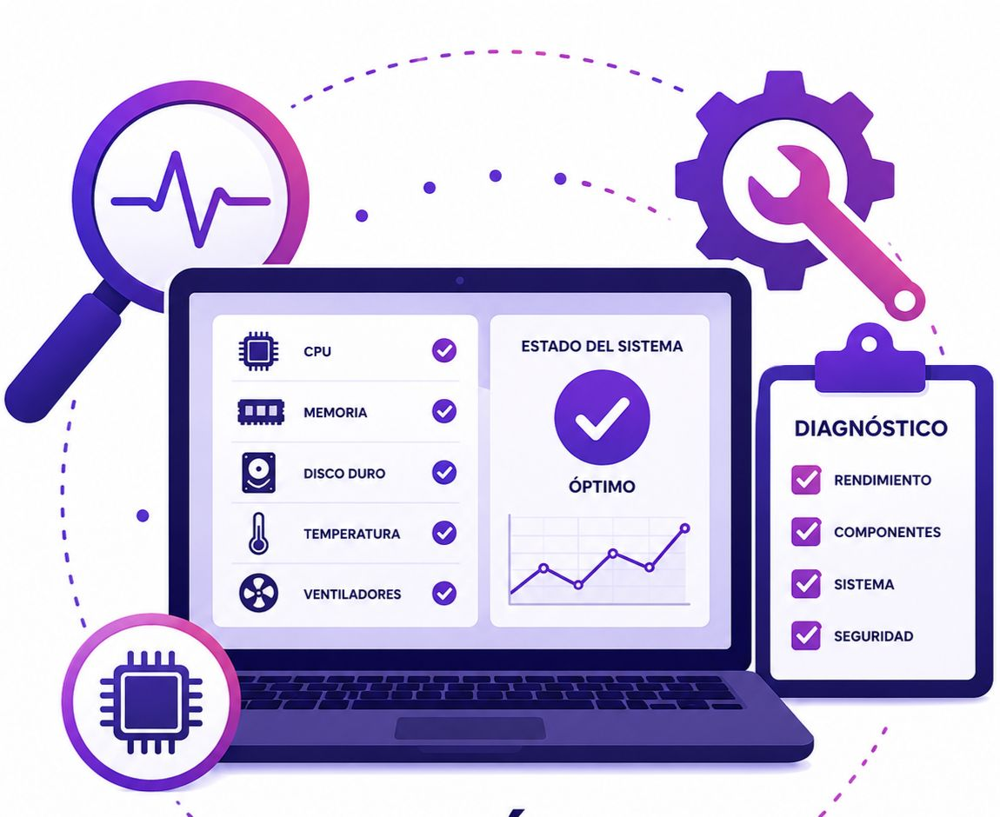

El mantenimiento correctivo se realiza cuando el equipo presenta fallas o deja de funcionar correctamente.
Nuestro objetivo es diagnosticar el problema, repararlo y devolver a tu equipo su rendimiento en el menor tiempo posible.
Respuesta inmediata para minimizar tiempos de inactividad.
Identificamos el origen del problema para repararlo correctamente.

Utilizamos refacciones y herramientas de calidad.
Devolvemos estabilidad y rendimiento a tus equipos.
| TIPO DE MANTENIMIENTO CORRECTIVO | ¿PARA QUÉ SIRVE? |
|---|---|
| Reparación de Hardware | Corrige fallas físicas en componentes como memoria RAM, disco duro, pantalla, tarjeta madre y fuente de poder. |
| Reparación de Software | Soluciona errores del sistema operativo, programas y controladores. |
| Eliminación de Virus y Malware | Elimina amenazas que afectan el rendimiento y la seguridad. |
| Recuperación de Información | Recupera archivos perdidos por daños, virus o formateos. |
| Reemplazo de Componentes | Sustituimos piezas dañadas por nuevas para recuperar el funcionamiento. |
| ptimización Final | Realizamos pruebas y ajustes para garantizar el mejor rendimiento. |
Nuestro equipo está listo para ayudarte. Solicita tu servicio y recibe atención rápida, diagnóstico profesional y una solución confiable para tu equipo.
Solicitar ServicioEl mantenimiento preventivo se realiza de forma periódica para mantener tus equipos en óptimas condiciones, reducir el riesgo de fallas y garantizar su rendimiento a largo plazo.
Previene problemas antes de que ocurran.
Mantiene tu equipo funcionando al máximo.
Prolonga la vida útil de tus componentes.
Reduce gastos en reparaciones futuras.
| TIPO DE MANTENIMIENTO PREVENTIVO | ¿PARA QUÉ SIRVE? |
|---|---|
| Limpieza interna y externa | Elimina polvo y suciedad para evitar sobrecalentamientos y fallas. |
| Revisión de componentes | Detecta piezas desgastadas antes de que fallen. |
| Actualización de software | Mejora el rendimiento y la seguridad del sistema. |
| Optimización del sistema | Configura el equipo para un funcionamiento más eficiente. |
| Respaldo de información | Protege los archivos importantes ante cualquier falla. |
Mantén tus equipos funcionando al máximo rendimiento. Agenda tu servicio preventivo con nuestros especialistas.
Solicitar ServicioEl mantenimiento predictivo utiliza herramientas de monitoreo y diagnóstico para detectar posibles fallas antes de que ocurran. Esto permite programar reparaciones oportunamente, reducir costos y evitar interrupciones inesperadas en el funcionamiento de tus equipos.
Supervisamos el estado de los equipos para detectar anomalías antes de una falla.

Analizamos el rendimiento mediante herramientas especializadas.
Identificamos problemas potenciales antes de que afecten la operación.
Reduce tiempos muertos y mantiene tus equipos funcionando continuamente.
| TIPO DE MANTENIMIENTO PREDICTIVO | ¿PARA QUÉ SIRVE? |
|---|---|
| Monitoreo de Rendimiento | Analiza constantemente el funcionamiento del equipo para detectar anomalías. |
| Control de Temperatura | Detecta sobrecalentamientos que pueden provocar daños internos. |
| Monitoreo Eléctrico | Identifica variaciones de voltaje o problemas en la fuente de alimentación. |
| Estado del Disco Duro | Evalúa la salud del almacenamiento para prevenir pérdida de información. |
| Análisis del Sistema | Revisa consumo de recursos, rendimiento y posibles errores del sistema. |
| Detección Temprana de Fallas | Permite planificar reparaciones antes de que ocurra una avería. |
Permite que nuestros especialistas supervisen el estado de tus equipos y detecten posibles fallas antes de que ocurran.
Solicitar Servicio